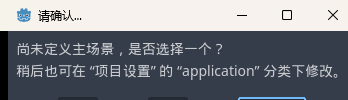
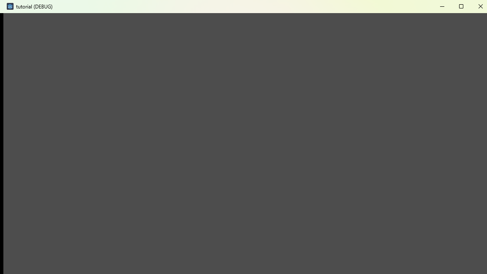
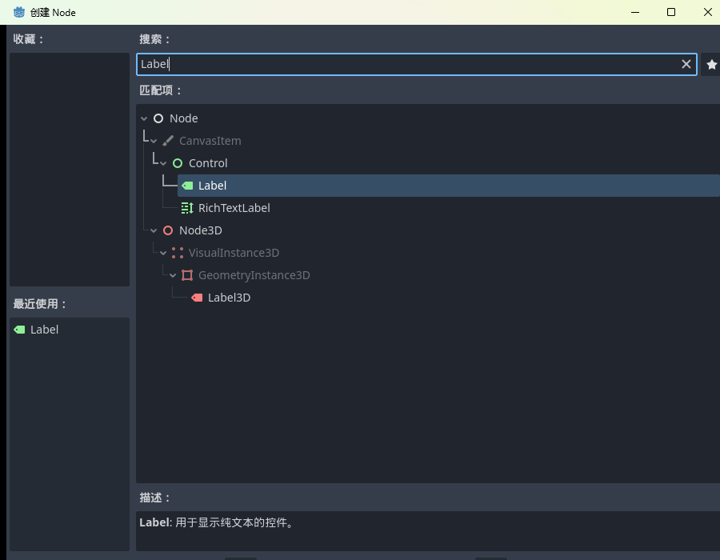
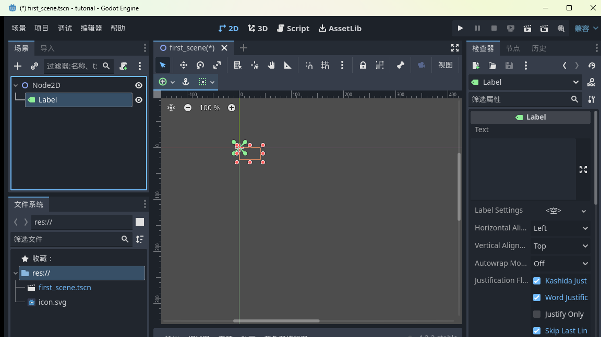
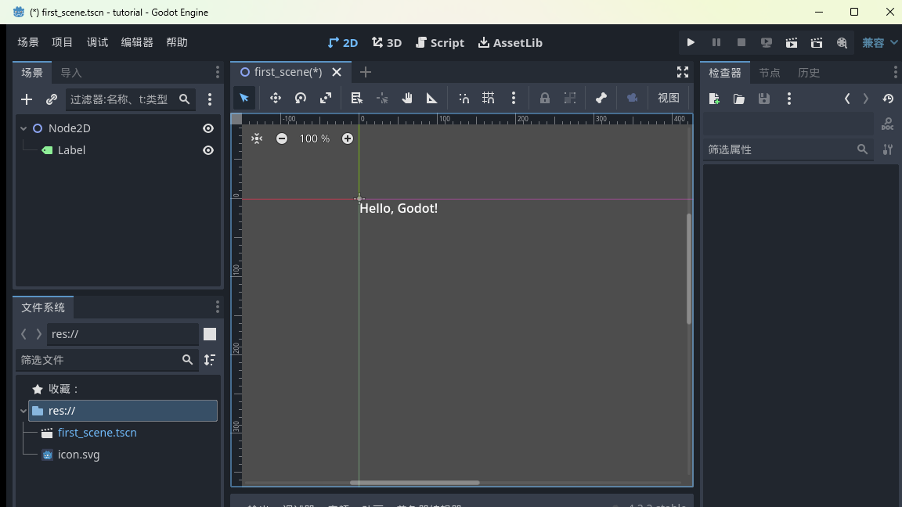
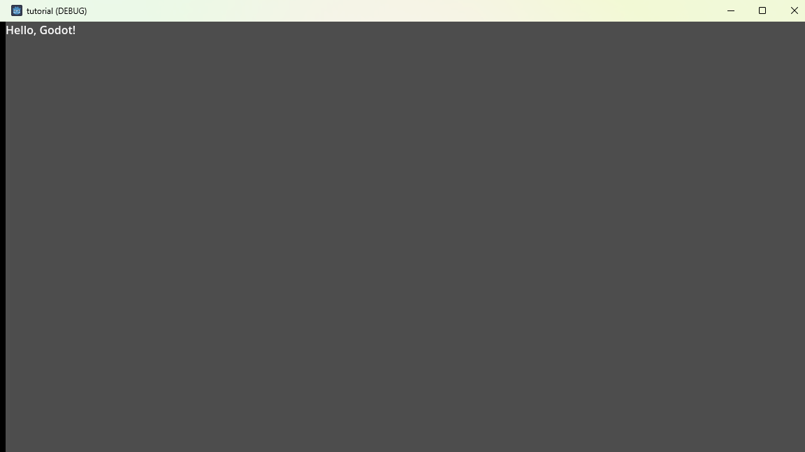

大家好，我是「山岚的运维笔记」。
说个真事。我第一次装好引擎、建好场景、存完档，跟住对住编辑器呆咗半日：然后呢？游戏呢？
答案是一个键：F5。
但这一按，新手会撞上第一个弹窗。今天就把这一按掰开讲透。
先想一个问题：你项目以后会有几十个场景——主菜单、十个关卡、设置页……按 F5 运行时，引擎应该先开哪个？
总要有默认入口吧。这个入口就叫主场景：游戏启动时第一个加载的场景。
Godot 唔会帮你估。你唔出声，佢就问你。
直接按 F5，或者点编辑器右上角的播放键。因为还没设主场景，Godot 弹出一个确认框：

「尚未定义主场景，是否选择一个？」——选它，就是把当前打开的场景登记为主场景。我们只有 first_scene.tscn，选它正合适。
确认之后，一个独立游戏窗口「啪」地弹出来：

标题是 tutorial (DEBUG)——DEBUG 意思是开发时的试运行版，正式导出就没这个尾巴了。
窗口里面嘛……一片灰。系啊，我哋除咗一个空 Node2D 乜都冇。但注意：这个窗口是一个真的、在运行的程序，不是截图不是预览。你以后写的每行逻辑，都会活在这个窗口里。
关掉它（点右上角 ×）回编辑器，主场景已经登记好——再按 F5 不弹窗，直接跑。
空窗口有点凄凉，加句字吧。
按 Ctrl+A（或者点场景面板的「+」），弹出创建节点对话框，搜 Label，回车：

Label 是「显示一串文字」的节点。创建完，场景树变两层：

Node2D 底下多了个 Label——上篇讲的「节点组成树」，就是这么回事：Label 是挂在 Node2D 底下的子节点。
接着喂文字：看右边检查器，最顶上有个 Text 属性，点输入框，打上 Hello, Godot!：

打完看中间视口，字已经出来了（就在坐标原点那，位置先不管）。
Ctrl+S 存档，再按 F5：

睇到未！左上角，白纸黑字，Hello, Godot!
这几行字技术含量约等于零，但意义唔一样：从「编辑器里的文件」到「跑起身嘅程序」，成条链路你走通咗。以后做再大的游戏，流程都是这条：改场景、存档、F5、看效果。
今天三个收获：主场景是启动的默认入口，首次 F5 会被要求指定；F5 运行、关窗停止；节点树是可以长的——Label 往 Node2D 上一挂，树就开枝散叶了。
不过你都发现咗：到而家全部系点鼠标，一行代码都冇写。想文字动起来、变色、同玩家互动？要代码上场喇。
下一篇：《Godot 入门实战 04：GDScript 第一课》，正式开写第一行代码。
呢篇帮你将游戏第一次跑起身，点赞 + 在看收下；想一路写到发布嘅，关注「山岚的运维笔记」。评论区吹水都得。
下一篇见。
（配套工程在 GitHub 的 Boxman 仓库 tutorial 分支，每篇一个进度 tag。）